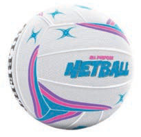
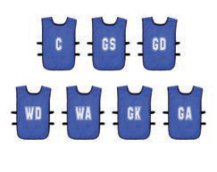

- (b) Goal defence (GD):
- Is allowed to play in a defensive third, goal circle and centre third.
- (c) Wing defence (WD):
- Is allowed to play in a defensive third and centre third.
- (d) Centre (C):
- Is allowed to play in any area of the field except within his or her own goal circle and that of the opponent.
- (e) Goal attack (GA):
- Is allowed to play in the circle of the opposing team, attacking the third and centre third.
- (f) Goal shooter (GS):
- Is allowed to play in the goal circle of the opposing team and In the attacking third.
- (g) Wing attack (WA):
- Is allowed to play in the centre third and attacking third.
Equipment
To play netball correctly, the following equipment are essential.

Netball Sports shoes
Sports shoes
Bibs